Вооружённые Силы Российской Федерации · учебная методичка
Методичка: вещевая служба ВС РФ — склад, маскировка, учёт (ф. 10 и др.)
Практическое пособие (полная версия: склад, маскировка, сроки носки, списание, ф. 10) для должностных лиц вещевой службы, начальников складов и старшин подразделений: организация хранения, маскировка полевых запасов, первичный учёт и работа с формой № 10 (акт закладки/обновления) и смежными учётными документами.
- Введение и назначение методички
- Правовая база
- Организация вещевой службы в части
- Виды имущества, категории I–III, ВКПО
- Нормы снабжения, сроки носки, климат, ростовка
- Организация вещевого / боевого склада
- Маскировка и полевое хранение
- Система учёта
- Форма № 10 (Акт закладки/обновления)
- Книги ф. 25–27, 37, 45, ярлык 64 и др.
- Документооборот при прибытии/переводе/убытии
- Выдача, замена, сдача, компенсации, БПО
- Инвентаризация, недостачи, материальная ответственность
- Чек-листы
- Источники и дисклеймер
Глава 1
Введение и назначение методички
Вещевое обеспечение — составная часть материального обеспечения войск. От качества работы вещевой службы зависят боеготовность личного состава, сохранность государственных материальных ценностей и дисциплина учёта. На уровне воинской части ключевые риски сосредоточены не в «теории норм», а в повседневных операциях: приём со склада вышестоящего звена, хранение, выдача в подразделение, обновление неприкосновенного запаса (НЗ), документальное сопровождение перевода и увольнения.
Настоящая методичка предназначена для начальника вещевой службы (его заместителя), начальника вещевого склада, материально ответственных лиц кладовых и старшин подразделений. Она не заменяет приказы Министра обороны, постановления Правительства и локальные инструкции части, а упорядочивает практику: что где хранить, как вести книги, когда составлять акт ф. 10, чем он отличается от одноимённой справки по ИД-2017, как действовать при отсутствии аттестата.
Цели пособия
- Дать сжатую правовую «пирамиду» открытых НПА по вещевому обеспечению и учёту.
- Описать организацию службы и распределение ответственности в типовой воинской части.
- Закрепить нормы устройства склада (стеллажи, проходы, окна, электросеть, пожарная безопасность).
- Систематизировать требования к маскировке и полевому хранению, включая раздельное хранение НЗ.
- Разобрать первичные и учётные формы (ф. 10, 11, 21, 25–27, 37, 45, 64, книга 0504042) на уровне заполнения и проверок.
- Дать рабочие чек-листы ежедневного, планового и инвентаризационного контроля.
Как пользоваться
Читайте главы последовательно при первичном изучении. При оперативной работе используйте оглавление слева (на печати — в начале документа) и главы 9–14 как справочник форм и чек-листов. Все схемы в папке images/ учебные: они иллюстрируют логику, но не заменяют утверждённые бланки.
Глава 2
Правовая база
Система вещевого обеспечения опирается на федеральный закон, постановления Правительства и ведомственные акты Министерства обороны. Ниже — открытая «пирамида», достаточная для повседневной работы в части. Конкретные редакции и пункты всегда сверяйте с официальными текстами на дату применения.
Федеральный уровень
| Акт | Суть для вещевой службы |
|---|---|
| Федеральный закон от 27.05.1998 № 76-ФЗ «О статусе военнослужащих», ст. 14 |
Гарантия продовольственного и вещевого обеспечения. Для отдельных категорий военнослужащих по контракту — возможность денежной компенсации вместо предметов личного пользования (в порядке, установленном Правительством РФ и ведомственными актами). |
| Федеральный закон от 12.07.1999 № 161-ФЗ «О материальной ответственности военнослужащих» |
Основания и пределы материальной ответственности за недостачу и ущерб имуществу; взаимодействие с дисциплинарной практикой по Уставу внутренней службы. |
| Постановление Правительства РФ от 22.06.2006 № 390 | «О вещевом обеспечении в Вооружённых Силах Российской Федерации… в мирное время»: базовые нормы, правила владения и пользования, банно-прачечное обслуживание, компенсации. Редакции обновлялись (в т. ч. с учётом изменений 2024–2025 гг.). |
Ведомственные акты МО РФ (открытые)
| Документ | Что регулирует |
|---|---|
| Приказ Министра обороны РФ от 14.08.2017 № 500 (с последующими изменениями, в т. ч. приказом № 367 от 27.06.2024) |
Главный «вещевой» документ ВС РФ на мирное время: Порядок обеспечения, нормы содержания и запасов, специальные нормы, особенности ВКПО, перевода, увольнения, спортивного и полевого имущества. |
| Приказ Министра обороны РФ № 139 (учёт материальных ценностей; формы по ОКУД) |
Утверждение (применение) учётных форм, в том числе акта закладки (обновления) материальных ценностей — форма № 10, ОКУД 6002206, а также порядка складского количественно-суммового учёта (в т. ч. книга 0504042). |
| Инструкция по делопроизводству в Вооружённых Силах Российской Федерации (ИД-2017) | Общие правила оформления, регистрации и хранения служебных документов. В практике делопроизводства встречается справка формы 10 (иные реквизиты и назначение) — её нельзя путать с актом ф. 10 по учёту МЦ (см. главу 9). |
| Распоряжение Правительства РФ от 25.05.2016 № 1014-р | Стоимость предметов вещевого имущества — ориентир для расчётов при выдаче взамен неполученного и при компенсациях. |
Документы ДСП (только упоминание)
В открытых обзорах и перечнях служебных документов встречаются обозначения 300дсп и 222дсп. Содержание, реквизиты и порядок применения таких актов в настоящей методичке не приводятся. Работа с документами «для служебного пользования» допускается только при наличии допуска и по правилам обращения с ДСП, установленным в воинской части и вышестоящем органе военного управления.
Локальные документы части
- приказ командира части о назначении материально ответственных лиц и комиссии по приёму/передаче дел;
- номенклатура дел строевой части (регистрация книг учёта);
- карточки вещевого довольствия, арматурные карточки, заявки по ростовке;
- инструкции по охране склада, пожарной безопасности, светомаскировке;
- график инвентаризаций и сверок подразделения со службой.
Глава 3
Организация вещевой службы в части
В типовой структуре воинской части вещевая служба входит в систему тылового (материально-технического) обеспечения. На практике «цепочка» выглядит так: центральные органы задают нормы и снабжение → округ/флот формирует наряды по ростовке → ЦМТО и склады отпускают имущество → вещевая служба части принимает, хранит, выдаёт → подразделение закрепляет и контролирует носку.
Должностные лица и зоны ответственности
| Должностное лицо | Основные обязанности | Типовые риски |
|---|---|---|
| Командир воинской части | Утверждает акты комиссий, назначает МОЛ и комиссии, обеспечивает условия хранения и охраны, организует инвентаризации. | Формальное утверждение актов без проверки; срыв сроков инвентаризации. |
| Заместитель командира по тылу (МТО) | Координирует службы тыла; контролирует обеспеченность, запасы, БПО, готовность НЗ. | Разрыв между «бумажной» обеспеченностью и фактическим наличием. |
| Начальник вещевой службы | Планирование потребности, заявки, приём со складов снабжения, организация хранения и учёта, сверки с подразделениями, контроль склада (в т. ч. не реже 1 раза в 2 месяца — полная проверка по открытой практике инструкций хранения). | Несвоевременные записи; смешение НЗ и текущего снабжения; слабый контроль ф. 26/27. |
| Начальник вещевого склада | Приём, хранение, отпуск; стеллажный учёт (ф. 64); охрана и опечатывание; соблюдение температурно-влажностного режима и ПБ. | Нарушение стеллажных нормативов; отсутствие ярлыков; выдача «с колёс» без документов. |
| Командир подразделения / старшина | Ведение ф. 26, ф. 37, ф. 45; контроль сдачи инвентаря; обеспечение явки на выдачу/замену; сохранность имущества в подразделении. | Просроченные возвраты по ф. 37; расхождение аттестата и факта. |
| Военнослужащий | Бережная носка, своевременная сдача/замена, сообщение о порче; подпись в раздаточных ведомостях и карточке ф. 45. | Утрата, порча по небрежности — основание для материальной ответственности. |
Правила взаимодействия службы и подразделения
- Любая выдача и возврат оформляются первичным документом в день операции.
- Первоначальные записи по вещевому имуществу в книгах подразделения, как правило, делает служба части; дальнейшее ведение — старшина. Начальные записи заверяет начальник вещевой службы.
- Сверка «подразделение ↔ служба» фиксируется записью «Сверено» с остатками и подписями.
- При приёме-сдаче дел склада и службы проводится инвентаризация с пломбированием и актом.
- Комиссионные акты (ф. 10, ф. 11 и др.) утверждает командир части после регистрации в ф. 25.
Глава 4
Виды имущества, категории I–III, ВКПО
Правильная классификация имущества определяет: можно ли его оставить у военнослужащего при переводе, подлежит ли оно сдаче, как учитывать износ и когда списывать.
Виды по назначению и режиму пользования
Имущество личного пользования
Форменное обмундирование, бельё, обувь повседневного назначения и др. Учитывается в карточке вещевого довольствия / ф. 45. Замена — по срокам носки. Для отдельных категорий контрактников возможна денежная компенсация вместо предметов.
Инвентарное имущество
Выдаётся во временное пользование и подлежит сдаче: большинство предметов ВКПО, палатки, постовая одежда, спальные принадлежности, ряд специальных комплектов. Не переходит в личную собственность (кроме прямо установленных исключений).
Специальное имущество
По условиям службы: для особо холодного/жаркого климата, ВМФ, лётное, техническое, ССО, радиационных работ, альпинизм, спорт и т. д. Нормы задаются приложениями к приказу № 500 (десятки специальных норм). Часто имеет инвентарный режим.
Категории качества (приказ № 500)
| Категория | Содержание | Практический вывод |
|---|---|---|
| I | Новое имущество, не бывшее в употреблении. | Офицеры и прапорщики обеспечиваются предметами ВКПО I категории. На складе хранится отдельно от бывшего в употреблении. |
| II | Бывшее в употреблении, срок носки не истёк; либо выслужившее срок, но годное без ремонта / после ремонта. | Типично для призывников и периода испытания контрактников; фонд сборов. |
| III | Непригодное к дальнейшему использованию; срок носки истёк. | Подлежит списанию по установленному порядку. Не смешивать с годным имуществом на стеллажах. |
Расходные материалы (носки, мыло и т. п.) на категории качества, как правило, не делятся и списываются прямым расходом по нормам.
ВКПО — кратко
Всесезонный комплект полевого обмундирования (ВКПО) — базовый полевой комплект современного обеспечения. Предметы ВКПО преимущественно инвентарные. Многослойный принцип позволяет комбинировать слои под погоду и задачу.
- Офицеры и прапорщики — ВКПО I категории.
- Сержанты и солдаты по контракту — I категория; при отсутствии — II.
- По призыву — преимущественно II категория (с отдельными исключениями).
- Последующая выдача одноимённых предметов контрактникам — по мере износа, но не ранее истечения сроков носки и после сдачи заменяемого имущества (кроме исключений).
- На Крайнем Севере и в местностях с ограниченным завозом допускается полная выдача по норме сразу.
Глава 5
Нормы снабжения, сроки носки, климат, ростовка
Норма снабжения отвечает на вопрос «что и сколько положено»; срок носки — «когда можно заменить»; климатический пояс и условия службы корректируют состав и периодичность; ростовка обеспечивает попадание в размер без массовой переделки.
Как читать норму
- Определите категорию военнослужащего (офицер/прапорщик, контракт, призыв, курсант, сбор).
- Выберите базовую норму и специальные нормы по должности/условиям (холод, море, ССО и т. д.).
- Разделите предметы на личное пользование и инвентарные.
- Учтите переходящие и страховые запасы (прил. к приказу № 500) и нормы содержания на одного военнослужащего.
- Зафиксируйте выдачу в карточке довольствия / ф. 45 и в книгах подразделения.
Примеры ориентиров сроков носки
Точные сроки зависят от нормы, категории и климата. Ниже — учебные ориентиры и фрагменты, встречающиеся в открытых выжимках из приказа № 500; для списания и замены используйте действующий текст приказа и карточку довольствия.
| Предмет (пример) | Ориентир срока / нормы | Примечание |
|---|---|---|
| Футболки (ряд норм) | до 3 шт. на 1 год | Личное / расходный характер по ряду норм |
| Футболка (оф./прап., норма № 1) | 2 шт. на 2 года | Ориентир по п. 56.1 Порядка (сверять) |
| Полуботинки | 1 пара на 2 года | Зависит от нормы категории |
| Шапка зимняя (оф./прап., норма № 1 — холод) | 1 шт. на 4 года | Ориентир по п. 56.1 |
| Костюм утеплённый / ВКПО (сезонные слои) | по норме + фактический износ | Замена после сдачи; не ранее срока |
| Носки, мыло и расходники | по норме расхода | Прямой расход; без категорий I–III |
Климат
Для особо холодного климата применяется специальная норма (в т. ч. норма № 1 в системе приказа № 500): расширенный состав утеплённых предметов, иные сроки. В жарком климате — облегчённые комплекты и иные периодичности стирки/замены белья. Местности с ограниченным завозом допускают единоразовую полную выдачу по норме.
Ростовка и размеры
- Типовые фигуры и шкалы размеров задаются ГОСТ 23167-91 и ГОСТ 20881-91.
- Отпуск со складов ЦМТО — по нарядам вещевой службы округа по заявленной (установленной) ростовке.
- На сборных пунктах содержится запас готового имущества порядка ≈ 10% потребности призыва — для подгонки и выравнивания ростовки.
- Данные замеров заносят в арматурную карточку → формируют ростовку заявок части.
Минимальный набор замеров (практика)
| Параметр | Зачем |
|---|---|
| Рост | Подбор роста одежды и длины брюк |
| Обхват груди | Размер кителя/куртки |
| Обхват талии / бёдер | Брюки, ремень |
| Размер головы | Головные уборы |
| Размер стопы | Обувь; контроль полноты |
Глава 6
Организация вещевого / боевого склада
Вещевой склад воинской части — не «кладовка», а режимный объект хранения материальных ценностей с разделёнными кладовыми, стеллажным учётом и охраной. Боевой (полевой) склад организуется по тем же принципам сохранности и учёта, но с усиленными требованиями маскировки (глава 7).
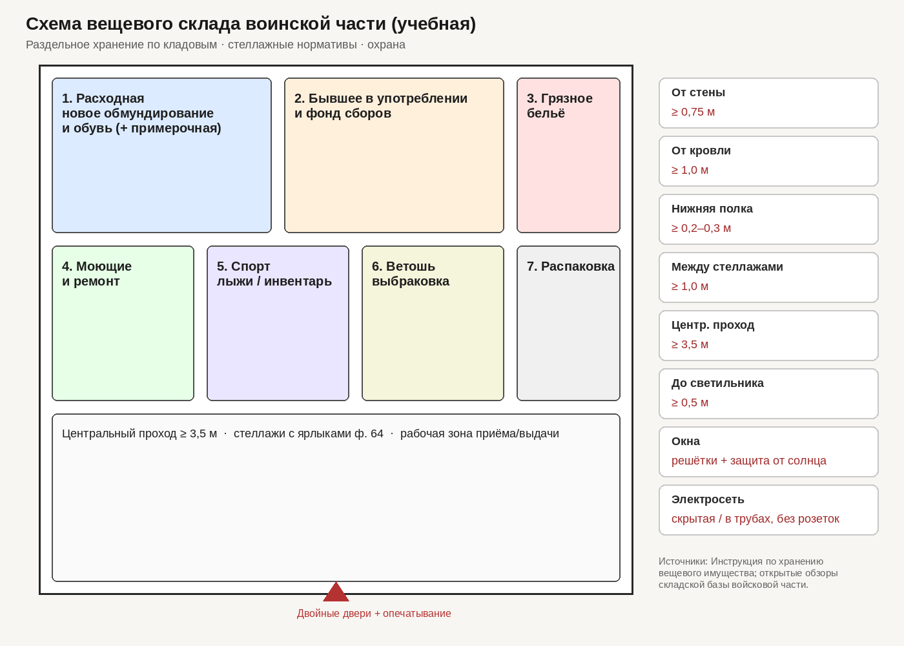
Типовое зонирование кладовых
| Зона | Содержимое | Замечания |
|---|---|---|
| 1. Расходная | Новое обмундирование и обувь; примерочная | Отдельно от б/у |
| 2. Бывшее в употреблении / фонд сборов | II категория, имущество сборов | Маркировка категории на ярлыках |
| 3. Грязное бельё | К сдаче в прачечную | Изоляция от чистого |
| 4. Моющие и ремонт | Моющие материалы, ремфонд | Учёт расхода |
| 5. Спорт / лыжи / инвентарь | Спортивное и спец. имущество | По нормам спецснабжения |
| 6. Ветошь / выбраковка | III категория к списанию | Не выдавать в носку |
| 7. Распаковка | Приём партий | Контроль комплектности |
| НЗ / длительное хранение | Неприкосновенный запас | Отдельно; закладка по ф. 10 |
Стеллажные и планировочные нормативы
| Параметр | Норматив (ориентир) |
|---|---|
| От стеллажа до стены | ≥ 0,75 м |
| От имущества до кровли / потолка | ≥ 1,0 м |
| Нижняя полка над полом | ≥ 0,2–0,3 м |
| Проход между стеллажами | ≥ 1,0 м |
| Центральный проход | ≥ 3,5 м |
| До светильника | ≥ 0,5 м |
Двери, окна, электрика, пожарная безопасность
- Двери — прочные, запираемые; для склада типичны двойные двери с возможностью опечатывания; ключи и слепки пломб — по журналу.
- Окна — металлические решётки; защита от прямого солнца (шторы, побелка, щиты), чтобы не разрушать ткани и резину.
- Электрическая сеть — скрытая или в трубах/металлорукаве; розетки в местах хранения имущества, как правило, не допускаются; переносные нагреватели запрещены.
- Освещение — исправные светильники с защитой; при работах не загромождать проходы.
- Пожарная безопасность — огнетушители и щиты на штатных местах, свободные эвакуационные пути, запрет курения, исправная сигнализация (если предусмотрена).
- Вентиляция и климат — проветривание, контроль влажности; мокрое имущество на хранение не принимать.
- Охрана — сдача склада под охрану с записью в журнале; вскрытие — комиссионно при нарушениях пломб.
Площади — ориентиры
Конкретная площадь склада определяется штатом, нормами содержания и запасами. Практически ориентируйтесь на возможность раздельного хранения по зонам (см. выше), соблюдение проходов 1,0 / 3,5 м и наличие места для приёма-выдачи без складирования в центральном проходе. Для полевого склада площадь площадки выбирают с учётом рассредоточения бунтов и обвалования (глава 7).
Глава 7
Маскировка и полевое хранение
Полевой (боевой) вещевой склад маскируется так же тщательно, как и другие объекты тыла: противник ищет геометрию, свежие следы техники и ночную подсветку. Учёт и сохранность при этом не «отменяются» — упрощается только конструкция укрытий, но не дисциплина документов.
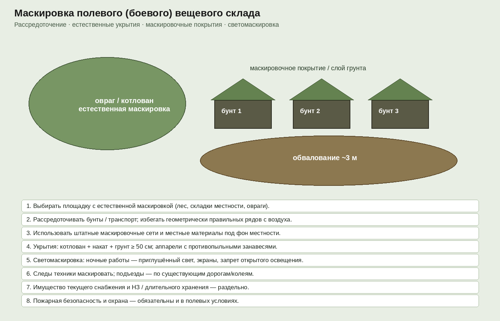
Правила маскировки и размещения
- Выбирать площадку с естественной маскировкой: лес, складки местности, овраги, котлованы — а не ровное открытое поле.
- Рассредоточивать бунты и транспорт; избегать геометрически правильных рядов, хорошо читаемых с воздуха.
- Использовать штатные маскировочные сети и местные материалы под фон местности.
- Укрытия: котлован + накат + грунт ориентировочно ≥ 50 см; аппарели с противопыльными занавесями.
- Обвалование площадки / отдельных элементов — ориентир порядка ~3 м по открытым схемам обучения (уточнять по инженерным нормам объекта).
- Светомаскировка: ночные работы — приглушённый свет, экраны, запрет открытого освещения и факелов.
- Следы техники маскировать; подъезды — по существующим дорогам и колеям.
- Имущество текущего снабжения и НЗ / длительного хранения — раздельно, с разной маркировкой и режимом доступа.
- Пожарная безопасность и охрана обязательны и в полевых условиях.
Бунты и упаковка
- Формировать бунты из однородного имущества; нижний ряд — на подкладках (брусья, поддоны), не на сырой земле.
- Накрывать штатными покрытиями / брезентом / маскировочным полотном; сверху — слой грунта или растительности под фон.
- В вести журнал (опись) содержимого бунта; дублировать ключевые данные на ярлыке, защищённом от влаги.
- Периодически проверять влажность, плесень, грызунов, целостность упаковки НЗ.
Глава 8
Система учёта: первичные документы, книги и карточки
Учёт вещевого имущества строится на трёх уровнях: (1) первичные документы-основания; (2) книги и карточки аналитического учёта в службе и подразделении; (3) вспомогательные регистры склада и контроля.
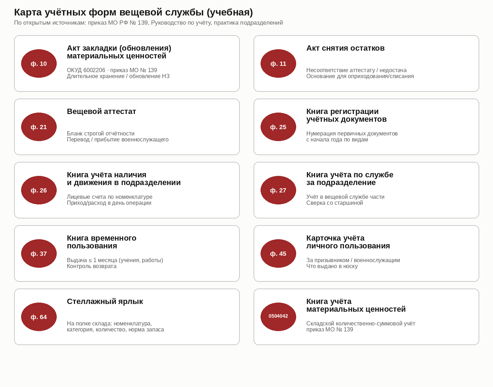
Сводная таблица форм
| Форма | Наименование | Назначение |
|---|---|---|
| ф. 10 | Акт закладки (обновления) МЦ ОКУД 6002206 | Длительное хранение / обновление НЗ (приказ МО № 139) |
| ф. 11 | Акт снятия остатков | Несоответствие аттестату / недостача; основание оприходования/списания |
| ф. 21 | Вещевой аттестат | Бланк строгой отчётности; перевод / прибытие |
| ф. 25 | Книга регистрации учётных документов | Нумерация первичных документов с начала года по видам |
| ф. 26 | Книга учёта наличия и движения в подразделении | Лицевые счета по номенклатуре; приход/расход в день операции |
| ф. 27 | Книга учёта по службе за подразделение | Учёт в вещевой службе части; сверка со старшиной |
| ф. 37 | Книга временного пользования | Выдача ≤ 1 месяца (учения, работы); контроль возврата |
| ф. 45 | Карточка учёта личного пользования | За военнослужащим: что выдано в носку |
| ф. 64 | Стеллажный ярлык | Номенклатура, категория, количество, норма запаса |
| 0504042 | Книга учёта материальных ценностей | Складской количественно-суммовой учёт |
Первичные документы
К первичным относятся накладные, раздаточные ведомости, акты ф. 10 и ф. 11, аттестат ф. 21, приказы командира (о зачислении, о комиссии), документы приёма от вышестоящего склада. Каждый документ регистрируется в ф. 25 (по виду) и проводится по книгам в день операции.
Книги и карточки
Аналитический учёт ведётся на лицевых счетах по наименованию и категории имущества. Итоги за период/год выводятся с подписями. Книга используется до полного заполнения и ежегодно перерегистрируется по номенклатуре дел строевой части.
Вспомогательные регистры
- описи имущества в каждом помещении склада;
- журнал сдачи склада под охрану / опечатывания;
- книга (журнал) учёта недостач;
- графики сверок и инвентаризаций;
- карточки вещевого довольствия / арматурные карточки (ростовка).
Глава 9
Форма № 10 — Акт закладки (обновления) материальных ценностей
Форма № 10 (ОКУД 6002206) по приказу МО РФ № 139 — это акт закладки (обновления) материальных ценностей. Она применяется, когда имущество ставится на длительное хранение или когда ранее заложенные ценности обновляются (изъятие с истекшими/приближающимися сроками и закладка свежих).
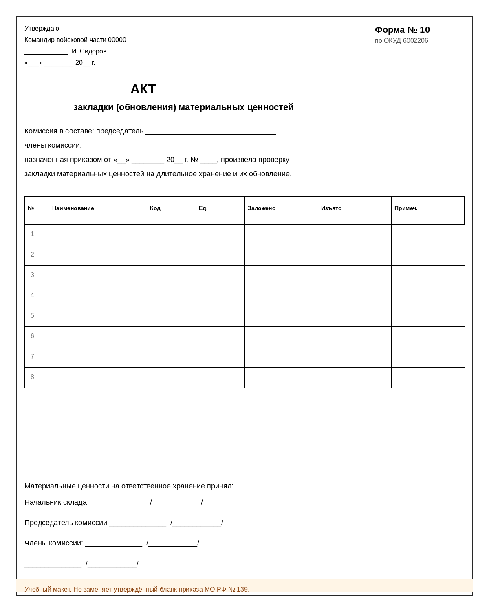
Когда применять
- Первичная закладка имущества НЗ / длительного хранения на складе части или в полевом хранилище.
- Плановое или внеплановое обновление заложенных ценностей (изъятие + закладка).
- Перезакладка после перемещения НЗ на новую площадку (с сохранением раздельного режима).
- Не использовать ф. 10 как «универсальный акт» выдачи в носку или списания III категории — для этого иные документы.
Как заполнять (практика)
| Блок | Что указать |
|---|---|
| Гриф утверждения | «Утверждаю», должность командира части, подпись, фамилия, дата |
| Заголовок | «Акт закладки (обновления) материальных ценностей», форма № 10, ОКУД 6002206 |
| Комиссия | Председатель и члены; ссылка на приказ о назначении комиссии (дата, номер) |
| Текст основания | Формулировка о проверке закладки на длительное хранение и/или обновлении |
| Табличная часть | № п/п; наименование; код (номенклатура); ед. изм.; количество заложено; количество изъято; примечание |
| Приём на хранение | Подпись начальника склада (МОЛ) о принятии ценностей |
| Подписи комиссии | Председатель и члены с расшифровкой |
- После утверждения акт регистрируется в ф. 25.
- Данные акта проводятся по складской книге 0504042 и связанным регистрам; ярлыки ф. 64 обновляются.
- Изъятое при обновлении имущество направляется в расходное хранение / ремонт / списание — по состоянию и отдельным документам.
- Исправления — по правилам документооборота (зачёркивание тонкой линией, «исправленному верить», подписи); подчистки недопустимы.
Отличие от «справки ф. 10» по ИД-2017
Акт ф. 10 (учёт МЦ)
ОКУД 6002206, приказ МО № 139. Комиссионный акт закладки/обновления материальных ценностей. Имеет таблицу заложено/изъято, утверждается командиром части, регистрируется в книге учётных документов.
Справка формы 10 (ИД-2017)
Документ делопроизводства иной природы: справка по вопросам службы/кадров/иным запросам в логике Инструкции по делопроизводству. Совпадает только «номер формы» в бытовом языке — не путать с актом закладки.
Глава 10
Книги и формы: как оформлять и вести
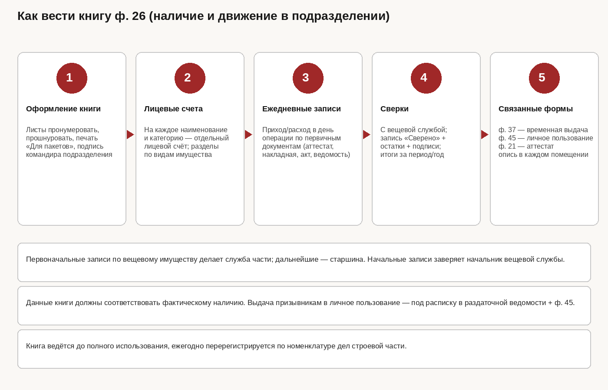
ф. 25 — Книга регистрации учётных документов
- Регистрирует первичные учётные документы с начала календарного года по видам.
- Присваивает номер, который переносится на документ.
- Позволяет восстановить цепочку: акт/накладная → проводка в ф. 26/27/0504042.
ф. 26 — Книга учёта наличия и движения в подразделении
- Листы пронумеровать, прошнуровать, опечатать печатью «Для пакетов», заверить подписью командира подразделения.
- На каждое наименование и категорию — отдельный лицевой счёт; разделы по видам имущества.
- Приход/расход записывать в день операции по первичным документам (аттестат, накладная, акт, ведомость).
- Сверки с вещевой службой: запись «Сверено», остатки, подписи сторон.
- Первоначальные записи часто вносит служба части; далее — старшина. Начальные записи заверяет начальник вещевой службы.
- Выдача призывникам в личное пользование — под расписку в раздаточной ведомости + запись в ф. 45.
- Книга ведётся до полного использования; ежегодно перерегистрируется по номенклатуре дел.
ф. 27 — Книга учёта по службе за подразделение
Ведётся в вещевой службе части в разрезе подразделений. Служит зеркалом ф. 26 для контроля обеспеченности и сверок. Расхождения ф. 26 и ф. 27 — сигнал к внеплановой проверке и, при необходимости, акту ф. 11 / инвентаризации.
ф. 37 — Книга временного пользования
- Выдача имущества на срок, как правило, не более 1 месяца (учения, хозяйственные работы, временные наряды).
- Обязателен контроль возврата по сроку; просрочка — доклад командиру подразделения и службе.
- Не заменяет выдачу в носку по нормам (ф. 45 / карточка довольствия).
ф. 45 — Карточка учёта вещевого имущества личного пользования
Открывается на военнослужащего. Фиксирует выданные предметы, сроки, замены. При переводе данные согласуются с аттестатом ф. 21. Подписи получателя обязательны.
ф. 64 — Стеллажный ярлык
Размещается на полке/стеллаже. Минимум реквизитов: наименование, код, категория, ед. изм., фактическое количество, норма запаса. При каждом движении количество на ярлыке приводится в соответствие с книгой.
Книга 0504042 — учёт материальных ценностей на складе
Количественно-суммовой складской регистр по приказу МО № 139. Движение проводится на основании зарегистрированных первичных документов. Остатки книги — база для инвентаризации и сверок с ярлыками ф. 64.
ф. 21 — Вещевой аттестат
- Бланк строгой отчётности.
- Сопровождает военнослужащего при переводе / прибытии; отражает имущество, следующее с ним.
- При отсутствии аттестата или несоответствии факту — комиссия составляет акт ф. 11.
ф. 11 — Акт снятия остатков
- Комиссия в составе начальника вещевой службы, командира подразделения и старшины (типовой минимум).
- Фиксирует фактическое наличие при несоответствии аттестату или выявленной недостаче/излишку.
- Утверждается командиром части, регистрируется в ф. 25.
- По акту — оприходование в ф. 26/27; недостача — в книгу учёта недостач и на административное расследование.
Глава 11
Документооборот при прибытии, переводе и убытии
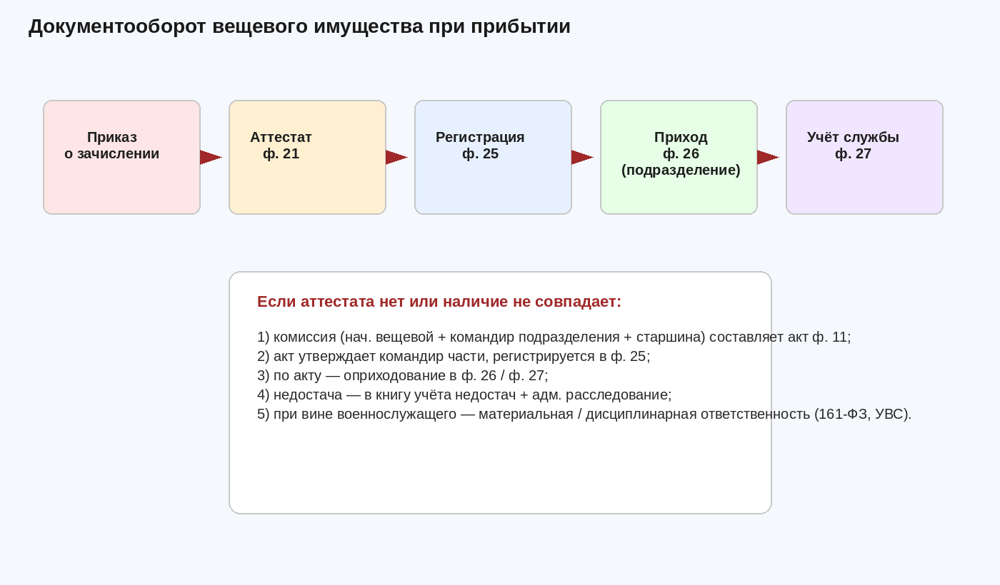
Прибытие в часть
- Издаётся приказ о зачислении в списки части.
- Принимается / проверяется вещевой аттестат ф. 21.
- Документы регистрируются в ф. 25.
- Имущество приходуется в подразделении — ф. 26, в службе — ф. 27; при необходимости открывается/уточняется ф. 45.
- При отсутствии аттестата или расхождении наличия — акт ф. 11, утверждение, проводки, при недостаче — расследование.
Перевод в другую часть
- Инвентарное имущество сдаётся на склад (в кладовую), кроме имущества, подлежащего следованию с военнослужащим по нормам и записываемого в аттестат.
- В аттестат ф. 21 вносят предметы ВКПО / лётное / техническое / ССО и установленные исключения.
- Книги ф. 26/27/45 закрывают операции расходными записями по первичным документам.
Убытие, командировка, увольнение
- При убытии в длительную командировку, переводе или увольнении инвентарное имущество сдаётся, кроме указанного в аттестате.
- Увольняемый к дню исключения из списков возвращает сдаваемое имущество и обеспечивается положенным имуществом личного пользования.
- Несданное имущество — акт, расследование, решение о материальной ответственности.
Глава 12
Выдача, замена, сдача, компенсации, БПО
Выдача
- Основание — норма снабжения + наличие на складе + первичный документ (ведомость, накладная).
- Подгонка и клеймение (где предусмотрено) — до передачи в носку.
- Получатель расписывается; данные уходят в ф. 45 / карточку довольствия и в ф. 26.
- На период испытания контрактника возможна выдача II категории с последующей заменой по правилам Порядка.
Замена и сдача
Плановая замена
По истечении срока носки: военнослужащий сдаёт заменяемое имущество (кроме исключений) → склад принимает → выдаёт новое → обновляются ф. 45 и книги. Срок нового предмета стыкуется с окончанием срока старого.
Преждевременный износ
При износе по служебным причинам — акт, заключение о причинах, решение командира. При виновной порче — меры по 161-ФЗ и УВС. III категория списывается установленным порядком.
Денежные компенсации
На основании ст. 14 Федерального закона № 76-ФЗ и ПП № 390 отдельные категории военнослужащих по контракту вправе получить денежную компенсацию вместо предметов личного пользования. Расчёт опирается на стоимость предметов (в т. ч. ориентиры распоряжения № 1014-р) и локальный порядок части. Компенсация не подменяет обеспечение инвентарным и специальным имуществом, необходимым для выполнения задач.
Банно-прачечное обслуживание (БПО)
- Стирка белья и обмундирования по нормам и графику; раздельный учёт грязного и чистого белья на складе.
- Моющие материалы — по нормам расхода; не хранить вперемешку с чистым обмундированием.
- Контроль качества возврата из прачечной: недосдача пар/комплектов фиксируется актом.
- В полевых условиях — развёртывание средств БПО с соблюдением маскировки и ПБ.
Глава 13
Инвентаризация, недостачи, материальная ответственность
Инвентаризация и приём-сдача дел
- Издаётся приказ о комиссии; склад при необходимости пломбируется.
- Снимаются фактические остатки; сверяются с книгой 0504042, ф. 26/27 и ярлыками ф. 64.
- Итоги в книгах подчёркиваются и подписываются комиссией и МОЛ.
- Излишки оприходуются; недостачи заносятся в книгу учёта недостач.
- При приёме-сдаче дел склада/службы передача без инвентаризации не допускается.
Недостачи и расследование
Выявленная недостача оформляется актом (в т. ч. ф. 11 — в ситуациях несоответствия аттестату/остаткам при прибытии). Командир организует административное расследование: круг лиц, период, документы движения, охрана, показания. До установления виновных ценности числятся на учёте в установленном порядке.
Материальная ответственность (161-ФЗ) и УВС
| Институт | Содержание |
|---|---|
| 161-ФЗ | Материальная ответственность военнослужащих за ущерб, причинённый по их вине. Различают ограниченную и полную ответственность (в случаях, установленных законом). Размер ущерба определяется в порядке, установленном законодательством и ведомственными актами. |
| Устав внутренней службы (УВС) | Дисциплинарная ответственность, обязанности по сохранности имущества, порядок докладов о утратах. Дисциплинарное взыскание не освобождает от материальной ответственности и наоборот. |
Глава 14
Чек-листы
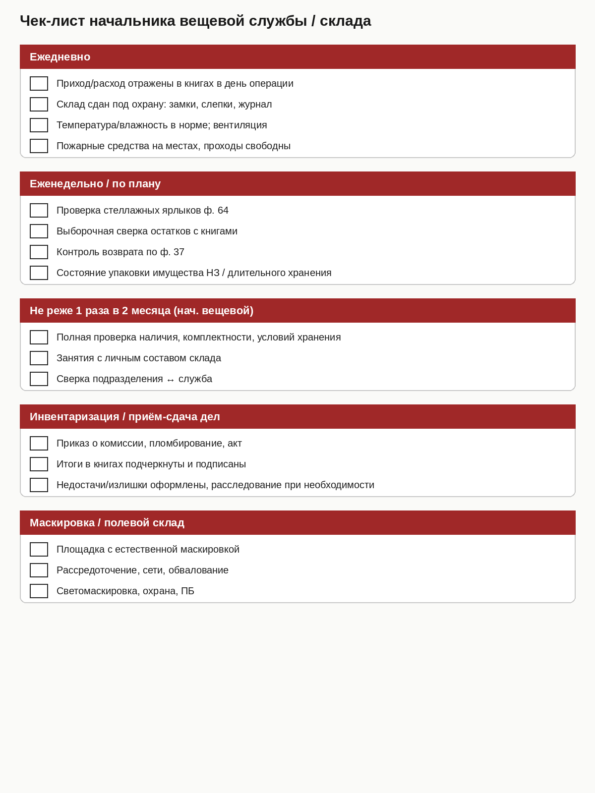
Ежедневно
- Приход/расход отражены в книгах в день операции
- Склад сдан под охрану: замки, слепки, журнал
- Температура/влажность в норме; вентиляция
- Пожарные средства на местах, проходы свободны
Еженедельно / по плану
- Проверка стеллажных ярлыков ф. 64
- Выборочная сверка остатков с книгами
- Контроль возврата по ф. 37
- Состояние упаковки имущества НЗ / длительного хранения
Не реже 1 раза в 2 месяца (начальник вещевой службы)
- Полная проверка наличия, комплектности, условий хранения
- Занятия с личным составом склада
- Сверка подразделения ↔ служба
Инвентаризация / приём-сдача дел
- Приказ о комиссии, пломбирование, акт
- Итоги в книгах подчёркнуты и подписаны
- Недостачи/излишки оформлены; расследование при необходимости
Маскировка / полевой склад
- Площадка с естественной маскировкой
- Рассредоточение, сети, обвалование
- Светомаскировка, охрана, пожарная безопасность
- НЗ хранится отдельно от текущего снабжения
Мини-чек перед утверждением акта ф. 10
- Есть приказ о комиссии
- Табличные количества совпадают с фактом и ярлыками
- Разделены колонки «заложено» и «изъято»
- Подпись МОЛ о принятии на хранение
- План регистрации в ф. 25 и проводок в 0504042
16. Режим вещевого склада
Кроме стеллажных нормативов склад должен работать как режимный объект: с паспортом, планом, контролем климата, запираемой картотекой и чёткой сдачей под охрану.
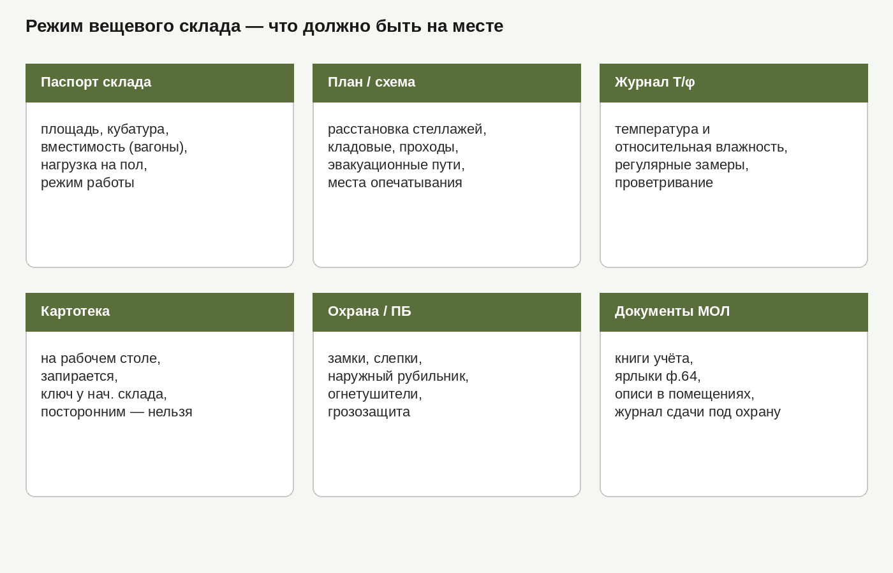
Обязательный минимум
- Паспорт склада — площадь, кубатура, вместимость, предельная нагрузка на 1 м² пола, режим работы.
- План хранилища со схемой стеллажей и кладовых; таблица размеров склада.
- Журнал температуры и влажности — регулярные замеры; мокрое имущество на хранение не принимать.
- Рабочий стол и картотека — картотека запирается, ключ у начальника склада; посторонним сведения о наличии не сообщать.
- Стенд документации — инструкции по охране, ПБ, светомаскировке (для полевого склада), обязанности МОЛ.
- Электрика и ПБ — наружный рубильник в запираемом ящике; розетки и электронагреватели запрещены; огнетушители и проходы свободны.
17. Арматурная карточка и ростовка
Арматурная карточка связывает антропометрию военнослужащего, норму снабжения и фактическую выдачу. По ней формируют ростовку заявок части и контролируют положенность.
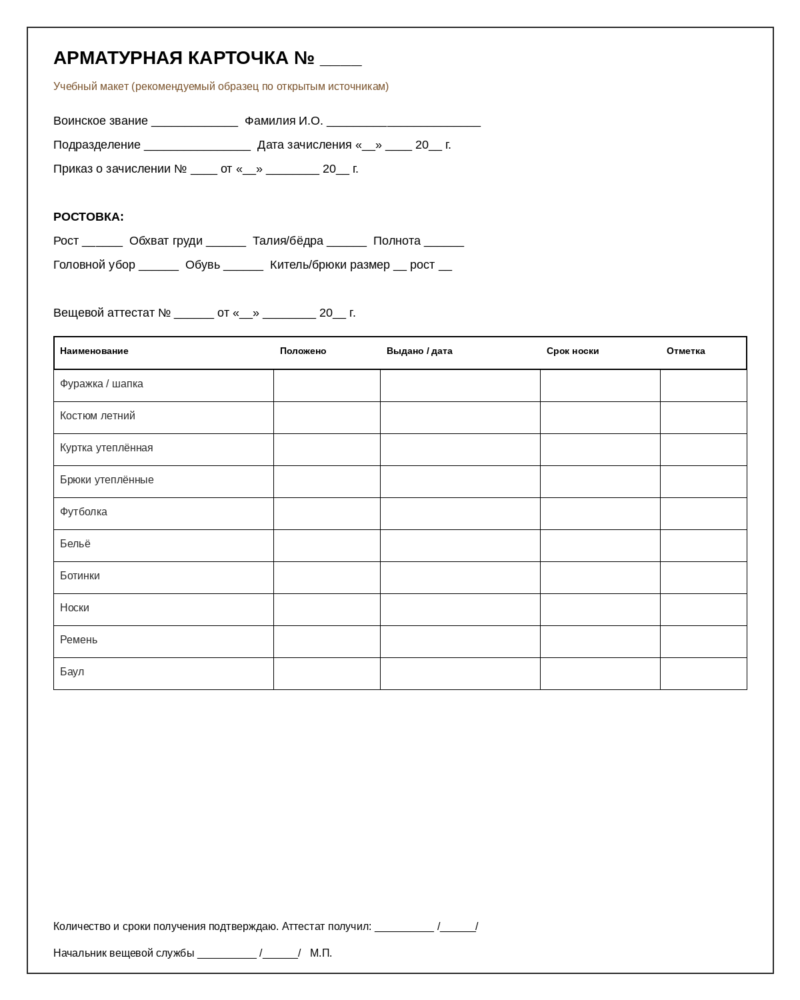
Как вести
- Заполнить установочные данные: звание, ФИО, подразделение, приказ о зачислении.
- Внести ростовку: рост, обхваты, размер головного убора и обуви, размер/рост кителя и брюк.
- Перенести сведения из вещевого аттестата ф. 21 (что уже состоит).
- По мере выдачи записывать предмет, количество, дату, срок носки; отмечать продления срока при наличии оснований.
- Карточки группировать по подразделениям, внутри — по званиям и алфавиту.
- При убытии военнослужащий подтверждает получение аттестата подписью.
Замеры: мужчины — рост, грудь, талия (полнота); женщины — рост, грудь, бёдра; обувь — длина стопы с округлением до 0,5 см; головной убор — обхват головы (ГОСТ 23167-91, 20881-91).
18. Клеймение, подгонка, подменный фонд
Подгонка и клеймение
- При выдаче (особенно призывникам) обязательны подгонка и клеймение инвентарного имущества по установленным правилам части/службы.
- Клеймение обеспечивает идентификацию и снижает риск подмены/утраты; место и способ клеймения — по ведомственным правилам и локальной инструкции.
- На сборных пунктах запас готового имущества ≈ 10% потребности призыва — для подгонки и выравнивания ростовки.
- Замена контрактникам — на складе / в ателье по истечении срока и после сдачи заменяемого предмета (кроме исключений норм).
Подменный фонд и рабочая одежда
- Создаются из сданного имущества, выслужившего сроки, но годного к носке (в т. ч. после ремонта).
- Рабочая одежда для хозработ призывникам и курсантам — не более чем на 100% списочной численности.
- Не смешивать подменный фонд с НЗ и с имуществом III категории, идущим на списание.
19. Сроки носки (подробно)
Срок носки отвечает на вопрос «когда можно заменить». Он зависит от нормы снабжения, категории военнослужащего и климатической местности. Ниже — учебные ориентиры из открытых выжимок приказа МО РФ № 500; для юридических решений сверяйтесь с актуальной редакцией.
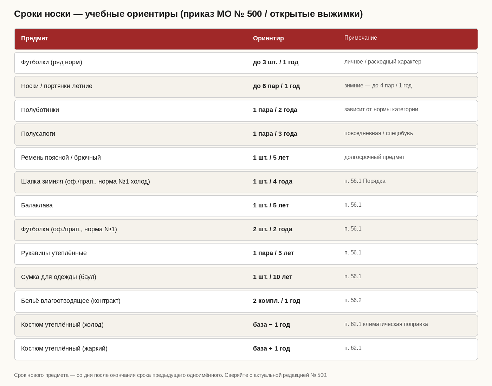
Климатические поправки (п. 62.1 — ориентир)
| Климат | Влияние на срок (пример: костюм утеплённый) |
|---|---|
| Умеренный | Базовый срок по норме |
| Холодный / особо холодный | Срок уменьшается на 1 год (интенсивнее износ) |
| Жаркий | Срок увеличивается на 1 год; у ряда предметов ВМФ — отдельные сроки |
Правила исчисления
- Срок нового одноимённого предмета начинается со следующего дня после окончания срока ранее выданного — «месяцы носки» не сгорают при плановой замене.
- Последующая выдача ВКПО контрактникам — по мере износа, но не ранее истечения срока и после сдачи заменяемого имущества.
- Отдельные предметы по истечении срока могут переходить в собственность военнослужащего — перечень исключений задаётся нормами и правилами к ПП № 390.
- Расходные материалы (носки, мыло и т.п.) на категории качества не делятся и списываются прямым расходом по нормам.
20. Списание имущества (III категория и расходники)
Списание — операция снятия имущества с учёта при непригодности и/или истечении срока. Детальный порядок ведомственных ДСП-документов в методичке не воспроизводится; ниже — открытая логика, достаточная для организации работы на уровне части.
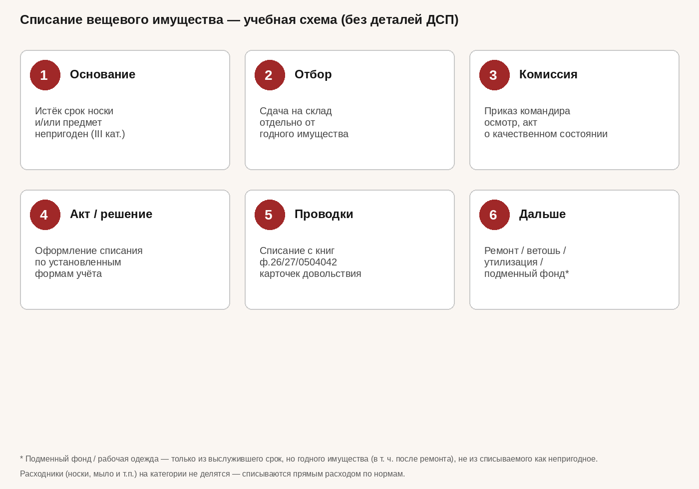
Когда списывают
- III категория — непригодно к дальнейшему использованию, срок носки истёк (или предмет признан непригодным комиссией).
- Расходники — носки, мыло и подобные предметы списываются прямым расходом по нормам, без деления на категории.
- Преждевременный износ по служебным причинам — отдельный акт; при признаках вины — расследование.
Последовательность (учебная)
- Отделить имущество III категории от годного; не хранить вперемешку на «боевых» стеллажах выдачи.
- Назначить комиссию приказом командира; осмотреть, зафиксировать состояние.
- Оформить акт (и связанные документы учёта) на списание.
- Провести списание по книгам склада/подразделения/службы и карточкам довольствия.
- Определить судьбу: ремонт (если ещё возможен до перевода в III), ветошь, утилизация/реализация — по правилам.
Чего не делать
- Не выдавать III категорию в носку «доходягой».
- Не путать списание с закладкой НЗ (ф. 10) и с временной выдачей (ф. 37).
- Не формировать подменный фонд из непригодного имущества — только из годного после срока.
- Не списывать «пачкой» без осмотра и первичных документов.
21. Приём-сдача дел склада и вещевой службы
- Приказ командира о приёме-сдаче дел и должности; назначение комиссии при необходимости.
- Прекращение или особый режим расходных операций на период передачи.
- Сверка книг (0504042, ф. 26/27 и др.) с фактическим наличием по стеллажам и ярлыкам ф. 64.
- Проверка НЗ и актов ф. 10; состояния упаковки; журнала Т/φ; ПБ и охраны.
- Оформление акта приёма-сдачи; объявление приказа; передача ключей, печатей, слепков, паролей (если есть).
- Недостачи/излишки — отдельными актами, с разбором причин.
22. Шпаргалка документов и типовые ошибки
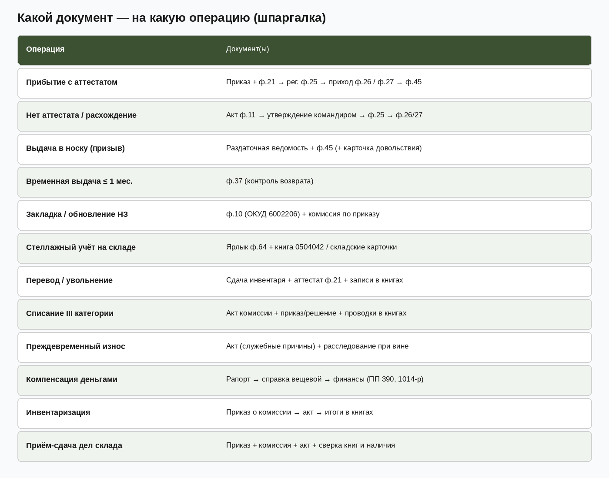
Типовые ошибки
- Записи в книгах не в день операции.
- Смешение НЗ, текущего снабжения, подменного фонда и III категории.
- Путаница: справка ф. 10 (ИД-2017) ↔ акт ф. 10 (приказ № 139).
- Выдача по ф. 37 без контроля возврата.
- Отсутствие ярлыков ф. 64 / описей в помещениях.
- Списание без комиссии или раньше срока без акта.
- Аттестат ф. 21 с исправлениями (исправления на аттестатах запрещены).
- Склад не сдан под охрану / слепки не проверены.
Глава 15
Источники и дисклеймер
Основные открытые источники (ориентиры)
- Федеральный закон от 27.05.1998 № 76-ФЗ «О статусе военнослужащих» (ст. 14).
- Федеральный закон от 12.07.1999 № 161-ФЗ «О материальной ответственности военнослужащих».
- Постановление Правительства РФ от 22.06.2006 № 390 (с изменениями).
- Приказ Министра обороны РФ от 14.08.2017 № 500 (с изменениями, в т. ч. приказ МО № 367 от 27.06.2024).
- Приказ Министра обороны РФ № 139 — учётные формы, в т. ч. ф. 10 (ОКУД 6002206), книга 0504042.
- Инструкция по делопроизводству в ВС РФ (ИД-2017) — в части отличия справки ф. 10 от акта закладки.
- Распоряжение Правительства РФ от 25.05.2016 № 1014-р — стоимость предметов.
- ГОСТ 23167-91, ГОСТ 20881-91 — типовые фигуры и шкалы размеров.
- Устав внутренней службы Вооружённых Сил Российской Федерации.
- Открытые обзоры складской базы и инструкции по хранению вещевого имущества (для ориентиров стеллажных норм).